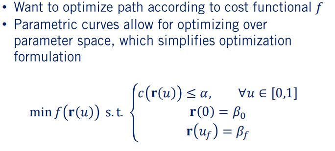
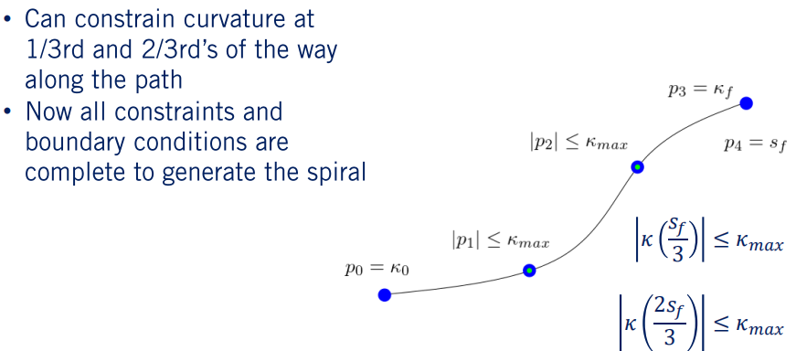
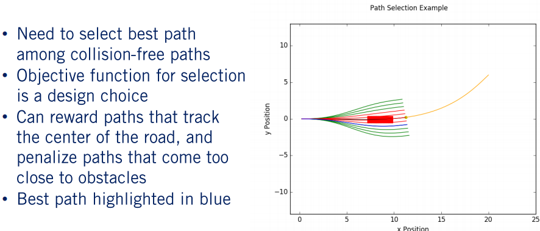

Smooth Local Planning 实现
在介绍之前，首先对 Module 6 中的 Reactive Planner 算法进行一个定性的描述，其本质是对Control space 做一个discrete(sample)，基于车体运动学方程进行前向积分从而生成轨迹。是 forward direction。而在该部分中所有介绍的方法，属于 reverse direction，其本质上是在 state space 中进行discrete(sample)。二者的性能区别对比如下(图为高飞老师课程课件，侵权请联系删除)
下面进入主题，开始介绍今天的规划实现方法。
本部分通过引入连续曲线路径优化作为两点边界值问题(BVP, boundary value problem)，该问题在满足曲率约束的同时实现与所需路径的偏差最小化。作为业内一种非常成熟的实现方式，实现的复杂度也丝毫不亚于 Reactive Planner。下面主要分几个部分进行介绍说明：
- 参数曲线的含义，运动规划约束和边界值问题的含义
- 螺旋曲线和样条曲线的概念，两者的优势和不足，如何进行权衡取舍
- 设计优化目标适合特定的运动计划任务，并使用Python库来解决优化问题
- 实现基于多项式螺旋优化的conformal lattice planner
- 如何计算受曲率，速度限制和动态障碍物约束的速度曲线
内容比较多，希望大家耐心看
1. 参数曲线
1.1 背景介绍
回到最根本的规划问题，其实就是给定一个起点状态，找到一个路径达到终点状态。其中说的状态一般包括位置，朝向，曲率。实现起来困难的地方在于如何满足运动学约束。放在优化的背景下考虑，查找路径的过程其实就是一个BVP(boundary value problem)，而运动学约束可以被理解为对优化变量的连续时间约束。
在这种情况下，边界条件必须在路径的任一端点上保持，才能将给定的优化解决方案视为可行。 如果违反了这些边界条件，那么无论走什么路，我们都无法达到预期目标。 因此是无用的。这些边界条件最终影响我们决定如何去设置优化问题的基础结构。
回到车辆运动学约束的问题上来，对于我们的路径规划器而言，我们唯一的运动学约束就是限制沿路径的最大曲率。 一般来说这个很难满足，因为沿连续路径有无数个点。因此，我们通常会沿着路径的不同点进行采样获取每个点的曲率，并约束每个点的曲率。如果这些点的值满足要求，则可以认为整个路径基本满足约束条件。

为了简化对优化问题的表示，我们将一条路径定义为参数曲线。 参数曲线可以描述为具有特定参数的一组方程的曲线。例如，我们为路径的x和y位置设置了三次样条参数方程。 当我们从路径的起点行进到路径的终点时，方程变量 u 从0到1变化。 向量值函数 r 则为对应于 u值的每个点的x和y位置。
对于自动驾驶而言，路径的参数表示可以使设置优化问题变得更加简单。如下图所示，起点状态是 ，终点状态是 ，运动学约束为 。则车辆的最优化方程可以用 f 来表示。

我们可以将这种参数曲线方法与Module6中的 Reactive Planner 进行对比，在该模型中，我们用空间中的点序列来表示轨迹和路径。 由于我们遵循的曲线没有参数表示，因此这被称为非参数路径。
1.2 不同类型的参数曲线
说完上面简单的参数曲线的背景及含义，下面开始正式说明参数曲线的应用。在自动驾驶领域，路径参数化有两种常见类型。 第一个是“五次样条(quintic splines)” ，是汽车x和y位置的五次多项式函数。 第二个是“多项式螺旋(polynomial spiral)”，由相对于弧长的多项式曲率函数给出。
上面分别是五阶样条，三次螺旋，这两个参数化曲线都为我们提供了满足我们刚刚讨论的边界条件的手段，还为我们提供了用于目标函数的参数，以根据我们的要求来设计路径。不同的选择对应于不同的应用，具体根据环境进行权衡。
Quintic splines & Quintic Splines Curvature
首先从五次样条方法开始。 五次样条由两个方程式给出，一个方程式用于x的生成，另一个方程式用于y的生成。 可以看到五次样条具有12个参数，其中x方程为6个，y方程为6个。 这些参数对应于形成曲线形状的多项式系数。 变量u在这里可以任意设置。为简单起见，我们将其范围设为0到1。 此时u等于0对应于路径的起点，而u等于1对应于路径的终点。
使用五次样条的好处在于，对于给定的位置，航向和曲率的边界条件，存在一个封闭可行解即一组满足条件的样条系数。其实现起来比使用迭代优化方法更加便捷。其不足之处在于，通常很难实现像自动驾驶那样地把曲率限制在一定范围内。从参数曲线的曲率方程中可以看出，对于我们的五次样条而言，曲率是弧长的函数，形式并不是多项式。此时很可能引入尖点，甚至会导致曲率的不连续。这使得很难在五次样条的整个范围内大致满足曲率约束。
Polynomial Spirals & Polynomial Spiral Position
下面使用多项式螺旋来表示我们的路径，这些曲线为沿其弧长的每个点的曲率提供了一个闭合形式方程。对于自动驾驶而言，通常选择三次多项式作为我们弧长的曲率函数。也可以使用更高阶的来实现。
使用多项式螺旋的好处在于，其结构非常容易满足路径规划问题中需要的近似曲率约束。由于螺旋线是曲率的多项式函数，因此曲率值不会像在五次样条曲线中那样迅速变化。所以，通过限制螺旋线和螺旋线中仅几个点的曲率，就很可能满足了整个曲线上的曲率约束。这样大大节省了执行路径优化的计算量，因为对约束的求解会极大地增加优化的计算量。
使用多项式螺旋的不足之处在于，螺旋的位置和航向没有封闭形式的解，这与五次样条中的情况不同。因此，我们必须进行迭代优化才能生成一个螺旋来满足我们的边界条件。从这里可以看出，位置方程得出的菲涅耳积分没有封闭形式的解。因此，我们需要使用数值逼近来计算螺旋的最终端点。在该部分，我们使用下图中第三行显示的Simpson规则来近似这些菲涅尔积分。Simpson规则比其他逼近方法更加准确，点数更少，这在设置优化问题时很有用。
综上，对比两种方法，每一种都不是完美的。样条曲线仅基于起点和终点提供封闭形式的解决方案，螺旋线算法无法实现。反之，螺旋线确保沿路径的平滑曲率变化，而样条曲线则无法实现。在个人使用时根据需要进行调用。简而言之，样条曲线可提高计算效率，而螺旋线则可简化曲率约束的实现。下面，以样条曲线为主要实现方式进行介绍。
2. 路径优化
说完了参数曲线的种类及其目标和约束，下面看一下如何将边界条件下的三次螺旋线与目标约束结合起来，以创建路径规划的优化问题。通过解决该问题来生成满足我们所有约束，同时平滑，可行的路径。过程中我们需要使用多项式螺旋来确定平滑路径规划所需的边界条件和约束，近似一些所需的约束以提高优化问题的可处理性，并且，映射所需的约束参数以使优化问题迅速收敛到可行的解决方案。
联系上一部分，首先需要说明的是，螺旋曲线虽然可以很容易地满足路径中的曲率约束，但在求解终止位置和航向约束时没有封闭形式的解，因此如果使用螺旋曲线满足约束，需要对其进行数值近似。在这我们可以使用上一节中提到的 Simpson 法则来实现。
2.1 Simpson 法则
Simpson 法则是一种常用的数值积分工具，通常比其他形式上简单的数值方法更加精确。这是因为它评估给定函数的二次插值的积分，而不是像某些方法（例如中点和梯形规则）那样评估线性插值的积分。即以二次曲线逼近的方式取代矩形或梯形积分公式，以求得定积分的数值近似解。
Simpson 法则在积分域内定义了 n 个等距分割线，然后在每个分割线和边界点进行求和积分。假设 n = 4，则将积分域分为了四个大小相等的段，因此，在积分域中我们一共包含了5个点。总和中的每个项都需要乘以适当的系数，从方程中可以看出，每个项的交变系数分别为4和2，除了端点项的系数为1。随着n增加，可以对积分实现更加精确的近似。
查看参考链接：辛普森积分法
回到之前的规划问题，实际上如果我们在 Simpson 法则中近似选取n = 8，那么对于我们要执行的优化来讲已经足够近似准确了，且计算压力不会太大。在这我们只是使用的三次螺旋函数进行积分，因此我们可以为它明确定义一个封闭形式的解决方案，即下图所示的四阶多项式。
从上图可以看出，使用 Simpson 法则进行近似，在每个分割点都可以得到一个 值，可以根据 值计算三次螺旋的x和y位置。对于x进行积分的被积数是s的 的余弦，而对y进行积分的被积数是s的 的正弦。于是，在由弧长参数s定义的任何给定弧长点处，我们都有一个有用的近似螺旋的x和y位置。我们用 和 来表示使用 Simpson 法则近似得到的 x 和 y 值。
回到边界条件，我们已经有了路径终点的近似值，可以根据已知的螺旋参数写出边界条件。现在，我们可以通过迭代优化螺旋的参数及其总弧长 来生成一个从一点到另一点的螺旋，该螺旋满足给定的边界条件。在此之前，需要了解一下要强制执行的运动学约束。
对于自动驾驶的路径规划而言，曲率约束绝对是重中之重。汽车具有绝对的最小转弯半径，需要保持在横向加速度限制内，以保持车轮的牵引力和车辆的乘坐舒适性，后面再具体描述。假设我们的汽车可以得到两米的最小转弯半径，对应于0.5 弧度/米的最大曲率。很难沿着螺旋线的每个点写出此曲率约束。但由于螺旋的多项式性质，我们只需要约束几个均匀间隔的点即可。由于曲率的多项式函数是连续的，因此在执行优化时我们不难生成一个满足曲率要求的螺旋线。
为简单起见，让我们将曲率限制在曲线的三分之一和三分之二处。 起点和终点曲率已在边界条件下受到约束。 完成此操作后，我们现在将曲率约束作为螺旋参数的函数，至此，我们拥有了解决优化问题所需的所有约束。

2.2 目标函数
解决完路径的曲率约束后，最后一个难题在于如何最小化实际目标函数。我们期望规划得到的路径是平稳舒适的。一种方法是沿路径均匀离散绝对曲率，这可以通过最小化我们规划的参数曲线的“弯曲能量”来完成。
曲线的“弯曲能量”是指沿着路径的整个弧长的平方曲率的积分。 由于我们具有描述三次螺旋的曲率多项式函数，因此“弯曲能量”的积分具有关于螺旋参数的闭合形式的解。 另外，它的梯度也有一个封闭形式的解。 这两个表达式都有很多术语，因此最好由符号求解器来创建它们。 目标函数及其梯度具有闭合形式的解使它成为非常有利于非线性编程的目标函数，在后面具体讨论。
2.3 初始化优化问题
有了目标函数后，我们就可以将所有内容整合到下面的路径规划优化问题中了。为了方便，在这我们假定初始边界条件为0，基于车体定义我们的局部规划问题，同时利用 Simpson 法则得出航向以及x和y近似值的简化表达式。因此在这我们可以删除初始边界值约束，因为我们在积分计算时已经考虑到了。
现在我们可以将其用作生成路径的优化问题。但是，如何设置此优化问题也还是个实际问题。因为当使用规范非线性规划求解器进行求解时，该优化问题可能会减慢其速度或使其根本不收敛。
2.4 软约束
我们在这里看到的主要问题与最终位置和朝向的相等性约束有关。因为必须严格满足相等性约束，所以数值优化器很难从不可行的起点生成可行的解决方案。而对于任何问题而言，通常都是给优化器提供可行的解决方案。为了缓解此问题，在优化中通常会使用软不平等约束来提高优化程序的性能。软约束将严格约束转换为目标函数中的严重惩罚项。所谓严重惩罚，是指约束惩罚项的系数至少应比一般的优化目标大一个数量级。
尽管这允许优化器违反边界条件相等约束，但是在“弯曲能量”损失项足够大以影响优化器之前，将强烈鼓励优化器收敛到尽可能接近边界条件的解决方案。 我们还将假定初始曲率是已知的，通常将其设置为0，这对应于0等于0。 这样可以将优化变量的数量减少1。 减轻这些约束后，我们的新优化问题如上图所示。 在定义要实施的优化问题的最终版本之前，我们还需要解决另一个问题。
2.5 参数重映射
最后一个问题与“优化参数”有关。 尽管在目标函数中使用三次螺旋系数更加直观，但实际上可以通过考虑最终曲率边界约束来减少正在搜索的参数数量。 让我们使用由向量 表示的一组不同参数重新定义三次螺旋，其中具有五个元素。 从 到 ，它表示起点处的曲率，三分之一点和三分之二点以及终点，最终项是路径的最终弧长。于是，我们在曲率参数和螺旋参数之间建立了一个闭合形式的映射，如下图所示。因此，我们可以轻松地根据这些新的p变量而不是螺旋系数来计算所有约束和客观项。
解决了优化问题后，我们可以在此处使用公式将结果映射回螺旋系数。由于我们已经知道了初始曲率和最终曲率，因此我们可以消除两个变量 和 。于是我们只需要优化问题中的 ， 和 这三个变量。 通过使用边界条件，我们减少了优化问题的维数，从而可以显著提高计算速度。
2.6 最后优化问题形式
最终的优化问题形式如下。在重映射到我们的 参数之后，我们用等效函数替换了螺线形参数的函数。注意，初始和最终路径曲率和是常数。 因此，优化变量现在只有 ， 和 。
由于在路径的起点和终点都知道曲率的边界条件，因此可以进行简化。 修改后，可以有效地解决路径规划问题，并大大减少陷入不良的局部最小值的可能性。
内容有点多，在这总结下各个部分。 首先，我们审查了此问题所需的边界条件和约束。 然后，我们讨论了如何使用Simpson法则数值计算螺旋的n个位置。 之后，我们引入了“弯曲能量”目标以鼓励平滑性，并形成了一个通用的螺旋优化问题。 最后，我们重映射优化函数的参数，以确保快速收敛到可行的解决方案。 说完理论实现后，下面说下如何进行实践操作。
3. 使用 Python 进行最优化
在开始之前，首先介绍下 Python 优化的基础知识。一般来说在专业使用中，我们使用SciPy优化库来解决通用非线性优化问题所需的一些功能。优化领域包括非常多问题，在这不一一赘述了。SicPy优化库涵盖了一些最另行的优化算法，使它们易于访问，并确保了合理的实现侠侣。就所需的参数类型而言，许多已实现的优化方法都具有相似的结构。因此，为了将其抽象为一个简单的界面，SciPy优化库包含一个通用的最小化函数。
其他一些可选的优化方法包括：conjugate gradient, Nelder-Mead, dogleg, 和BFGS。详细信息可以查看参考链接。对于这些算法来讲，运行哪些特定的优化算法将取决于你传递给此函数的方法参数。方法参数还将确定优化算法需要哪些附加参数。 例如，在我们将使用的L-BFGS-B算法中，我们不仅需要最小化模型，还需要模型Jacobian和可变边界。
1 | result = sp.minimize(objective_function, x_0, method='L-BFGS-B', |
在模型是单个标量值函数的情况下，Jacobian矩阵减小为梯度。 该Jacobian行列式通过jac参数传递给最小化函数，如该函数调用中所示。我们希望最小化的实际功能是最小化功能的第一个参数。 约束作为字典或对象的列表传递到约束变量。此外，还有一个可选的options参数，高级用户可以使用该参数来定制诸如优化程序输出的内容。这些优化算法还需要对模型或目标函数的优化变量进行初步猜测，这由 在函数调用中给出。下面具体看下如何使用 SciPy 中的BFGS算法进行优化。
本质上，对于BFGS算法，我们需要将函数指针传递给我们希望最小化的实际目标函数，以及将函数指针传递给评估目标函数的Jacobian函数的函数。这些函数将采用所有优化变量的向量，以便在特定点评估目标函数和Jacobian行列式。
优化完成后，最小化函数将返回结果变量。 用x表示的结果的成员变量将返回已达到局部最小值的优化变量的最终向量。
前面提到过，我们还可以为优化问题指定约束。 对于大多数算法，这些约束以列表或字典的形式给出。 最简单的约束类型是对称为边界的目标变量的不等式约束。边界由L-BFGS-B算法指定为列表的列表，其中每个子列表的长度为 2，并包含每个优化变量的上限和下限。 换句话说，第一个子列表与 的边界相对应，第二个子列表与 的边界相等。然后将这些边界传递到最小化函数的constraint可选参数。
线性和非线性约束也可以传递给优化器，但是现在，我们将重点关注对优化约束使用边界。

有关更多详细信息，可以在线查看SciPy优化文档。 还可以通过传递要在优化器函数中使用的每个约束对象的Python列表，来组合多种约束类型。最后看下实际的实现效果：
1 | #nlopt |
4. Conformal Lattice Planning
介绍完前面的参数曲线和优化问题的求解，下面就要考虑如何进行实现了。回想下使用参数曲线进行优化的前提，是有一组起点状态和终点状态，但这些点如何进行选取呢。选取后如何与原有方法进行结合呢。在这引入 Conformal Lattice Planning 算法，下面具体进行介绍。
Conformal Lattice Planning 与所有其他算法一样，目的是规划一条从汽车当前状态到给定目标状态的可行无碰撞路径。重点是，该算法利用了道路的结构化特性，在避免障碍的同时加快规划过程。通过仅关注那些稍微偏离目标路径左侧或右侧的平滑路径选项，制定和人类判断相似的规划。简言之，算法默认驾驶的背景和前提是，除非有紧急停车的情况，否则汽车不应考虑离开道路。
因此， 算法选取的目标状态一般是在相对于道路的方向，从中心目标状态横向偏移而形成的，其中包括中心状态以及一系列备选目标状态。如上图所示，每个路径的终点从中心路径横向偏移，该中心路径对应于道路上的目标点。 该目标点以金色突出显示。之所以这样做是因为一般来说车辆都是沿着当前车道前进，所以我们不会去关心其它无关车道，因此我们可以极大地减少搜索空间，从而减少算法的运算量。
难点在于，如何选择合理的目标状态呢？通常在选择的过程中需要权衡取舍。假如我们选择的目标状态接近当前的车辆位置，那么可以减少生成到目标点路径所需要的计算量。但同时也会降低算法在避开障碍物时所生成路径的平滑性和舒适性，特别是在高速时，车辆在单位规划周期时间内会走更多的距离。因此，一般我们会根据车速和天气状况等因素来动态计算我们规划中设定的目标范围。

在这为了简化运算，我们使用固定的目标范围。将沿车道中心线的点设为目标点，即目标范围就是我们正前方的距离。如上图所示，黄色的点对应于选定的目标位置，而蓝色的点对应于横向偏移的目标点，这些点将作为 Lattice 中每个螺旋线的端点约束。车道中心线的黑色部分的弧长等于我们选择的目标范围。 在每个规划周期中，我们将基于相同的目标范围重新计算目标点，并沿着车道前进。
一旦找到了这些目标状态，我们就可以计算生成到达每个目标所需的螺旋线。此时我们不用担心路径是否冲突，只要求得到运动学上可行的，到达每个目标状态的路径即可。因此，我们可以使用第二部分提到的优化公式来求解从当前状态到每个目标状态的三次螺旋。如果任一螺旋线在运动学上不可行或无法达到所需的目标状态，则将其丢弃，不再视为潜在路径。
利用优化公式求解后，我们就得到了结果参数向量 。此时，我们必须停止最初对螺旋系数执行的变换，以便从 向量中检索它们。一旦有了螺旋系数，我们就可以沿螺旋曲线采样点，以获得整个路径的离散表示。
同样，由于我们无法使用螺旋线方程得到目标位置的闭合形式的解，因此需要再次执行数值积分。但是这一次因为我们需要评估多个螺旋线的积分以及多个点，所以需要一种更有效的方法来求解这些积分。在这里，我们采用线性插值方法 – 梯形法则。在这种情况下，梯形法则比 Simpson 法则有效得多，因为沿曲线的每个后续点都可以从前一个法则构建。因此，我们只需要对螺旋进行一次扫描就可以得到所有要求的数值。 而使用 Simpson 法则将要求我们为每个点求解积分近似值，效率要低得多。
在Python中，我们可以使用累积梯形函数cumulative_trapezoid()来实现这一点。一旦应用了梯形规则，对应每个目标点的每个螺旋就都有一个离散表示。重点是，我们要跟踪每个点的曲率，位置和航向，方便我们后面进行速度规划。此时我们有曲率和航向的封闭解，所以不需要数值积分。
使用梯形规则后，我们可以为此处显示的每个目标状态生成对应的路径。 在这我们已经有了完整的路径集，下面要看下哪些路径没有冲突。
在这我们可以使用 Reactive Planner 算法中讨论到的任何一种 Collision check 方法。一般，我们使用二进制栅格进行处理，如果一个单元被占用则记为1，否则为0。然后，我们可以根据栅格中的占用来计算汽车的足迹，将足迹扫过螺旋中的每个点以生成路径的范围。例如，如果条幅中的一个单元的栅格包含障碍物，则此路径将与障碍物发生碰撞，此时对路径进行标记。如果沿整个路径的条带中的任何单元格都从未发生这种情况，则认为该路径没有碰撞。
或者我们可以使用圆环检查，将车辆和当前通道中的每个障碍物都作为一个圆来近似。然后，将车辆的圆圈放置在路径上的每个点，并检查与处于当前车道内的每个障碍物的碰撞情况。为了说明碰撞检查的结果，我们在路径中添加了我们现在需要规划的停放车辆。与上一种方法相似，沿着每个路径扫描之后，我们将无碰撞的路径标记为绿色，将与障碍物碰撞的路径标记为红色。
注意对每个路径的排序选择，通过目标函数对每个路径进行“惩罚”和“奖励”。离中心目标越远，惩罚越大。仅当参考路径不可行或与障碍物碰撞时才让它偏离参考路径。简单起见，可以将目标函数假设为要检查的路径从中心目标状态到目标状态的位移。然后，我们遍历该路径集中的每个路径，找到最小化此代价的路径，然后选择它作为最终路径发布即可。如下图所示，所选路径以蓝色突出显示。

沿着路径行驶时多次重复此过程，即可规划出一条收敛到目标状态的路径，同时还可以避免障碍。与之前提到的 Reactive Planner 相似，车辆以渐进的方式朝着远处的目标前进。此时，我们生成的路径是平滑无碰撞的，可以发布给控制器去执行。
5. 速度曲线生成
与之前提到的 Reactive Planner 算法不同，在这生成的只是路径集，每个路径点并没有包含参考速度。如何生成合理的速度曲线呢？特别是，规划过程中提供的参考速度，我们前方的动态障碍物的速度，以及保证乘客舒适度和车辆稳定性所需的速度等，都会影响我们速度曲线的生成。下面具体来看下。
4.1 影响速度的几个因素
a. Behavioral Planner Reference Velocity
生成速度曲线的第一步是确定最终所需的速度。一般来说是以Planner给我们的参考速度作为初始值。该参考速度很大程度上受基于当前驾驶场景选择的行为决策的影响。例如我们在十字路口停下来，behavior planner 将向 local planner 发出停止的操作，其中包括输出0速度的参考值。如果我们当前正沿着指定的道路前行，则参考速度可能只是当前道路的速度限制。我们后面用 来表示。
b. Dynamic Obstacles
另一个影响因素是动态障碍物，特别是正前方车辆。前车速度时刻影响着我们的速度，因为如果我们超过前车车速则会发生碰撞。回想下，碰撞时间是我们与前方车辆的相对速度以及由s表示的与前方车辆的路径长度的函数。因此，为了保证安全的碰撞时间，我们将参考速度设为前方车辆速度，行为规划速度以及参考速度三者中的最小值。此外，在到达此规划迭代的当前位置之前，我们需要确保当前速度低于前方车辆的速度，否则，我们仍然有与它们碰撞的风险。 通常，在处理动态障碍时，为安全起见，最好在我们的计算中留出空间和时间缓冲。
因此，如果我们的路径末端位于前方车辆的当前位置之前，我们需要确保在该点之前达到最终速度，并且留下空间缓冲区，如路径上的红色点所示。当我们到达速度曲线上的红点时，如果它的速度比我们慢，我们就需要达到领先的车速。当我们到达当前位置时，前方的车辆将向前移动。在那一点上，我们将达到它的速度，防止我们与它相撞。请注意，我们还可以进一步引导车辆跟踪，并在给定引导车辆速度的情况下直接确保碰撞或分离距离的安全时间，但这会将控制功能从相对速度跟踪更改为相对距离跟踪。
c. Curvature and Lateral Acceleration
影响速度的最后一点是沿规划路径的最大曲率。在上一部分提到，当我们采样优化路径时，我们记录了由大写字母 L 表示的每个点处的螺旋线的曲率。此外，我们在第一部分中提到过，最大的横向加速度也需要限制在以舒适度为边界的“长方形”内。横向加速度取决于瞬时曲率以及沿曲线的纵向速度。 因此，曲率限制了我们在遍历路径时可以采取的纵向速度。我们可以通过确保路径上的每个点的速度保持在限制以下来实现。但是，如果曲率变化很快，我们可能无法在保持在纵向加速度范围内的同时达到所需的速度。因此，我们找到了路径中所有点的最大曲率，然后找到了该点的关联最大速度。
然后，我们整体必须通过路径上的点达到此所需速度。因此，我们会在最小点上减速至所需速度，并随后进行加速。对于下一个最大的曲率约束我们也重复此过程。以此类推，直到速度曲线沿其长度满足曲率约束为止。就像赛车在经过大转弯时所做的那样，因为转弯的曲率约束限制，首先进行减速操作，达到所需速度后再恢复速度。另一种更简单的方法是，确定最大曲率点，设置关联的速度，然后简单地保持该速度，直到我们通过该点为止。由于我们以回滚方式不断进行重新规划，因此，一旦达到高曲率点，则基于先前定义的其他目标，生成的新速度曲线自然会提高速度。
总结下，速度分布图的生成过程，就是将基于曲率的最大速度，行为规划的参考速度以及引导车辆的最大速度这三个速度进行结合的过程。通过选择三个中的最小值来满足最终的期望速度。
4.2 生成速度曲线
接下来，我们需要讨论速度分布图的形状。 最简单的情况是，从当前速度到我们先前计算的所需最终速度间生成线性斜坡曲线。在规划时，我们知道路径的总弧长（表示为s）以及初始速度和最终速度。
我们需要计算的第一件事是所需的加速度，我们可以使用给定的输入直接解决该问题。 我们必须小心确保计算出的加速度不会超出本课程前面所述的舒适矩形。 如果它确实超过了舒适矩形，那么我们将需要对其进行收敛限制。
如果出于安全考虑（例如在紧急停止操作期间）需要超过舒适矩形的加速度或减速度，那么我们可以绕过该舒适矩形以防止碰撞。 如果要钳制加速度，则需要使用最大加速度max而不是计算出的加速度来相应地更新最终速度。有了加速度曲线后，我们可以通过查看到第i个点的弧长来计算路径上每个点的速度。 通过遍历整个路径并计算每个点所需的速度，我们已经完全沿着路径生成了速度曲线，以达到所需的最终速度。 另一种轮廓是梯形轮廓。
当汽车接近停车标志，并且我们希望从标称速度减速到较低的行驶速度，然后再减速到停车标志处停车时，此功能很有用。 对于此速度曲线，我们将初始速度和最终速度，所需的通过速度和所需的减速度作为输入。 通常选择这种减速度在我们的舒适矩形内，以使轮廓尽可能平滑。
第一段
第一步是计算从初始速度减速到达目标速度需要经过的距离，如图所示是在梯形曲线的第一段期间行进的弧长，在这由第一个等式计算得出，用 来表示 。因此可以看出，沿着初始路径的弧长应被用作初始减速。这里的初始计算参数包括我们给出的初始速度 ，目标速度 和值为0的加速度。有了该弧长值后，就可以遍历该弧长上的所有点，并使用所示的第二个方程式计算第 i 点所需的速度。
第三段
然后，我们可以对最后的减速过程（从过程速度到终止速度）重复一个类似的过程。我们将路径的整个弧长表示为 。因此，第三部分的长度为 减去 。然后，我们可以按如下方式求解 。 一旦有了 ，我们就可以遍历此弧长范围内的所有点，并为它们分配所需的速度，以实现缓慢减速至停止。 然后，轮廓中间的其余点采用我们恒定的过程速度 。
所有段
将所有部分组合在一起后可以看到，速度曲线中共有三个区域：初始速度下降缓慢行驶速度，以该速度匀速运行，最后减速到停止点。在这展示了两种生成速度曲线的方法，但还有许多其他方法可以使用使用，例如高阶的biquadratic速度规划器，同样可以最小化轨迹的jerk。可以通过在这使用的两种方法在速度斜坡中应用高阶函数，从而生成更平滑，更舒适的速度曲线。 最终，根据要执行的行为，可以优化速度曲线以满足多个目标，同时满足舒适性和安全性约束。
5. 总结
内容很多，总结下。首先我们介绍了路径规划中两种参数曲线类型：螺旋线和样条。之后定义了路径规划问题所需的目标和约束。后面学习了如何进行优化以及将其应用到 Conformal lattice planner，以实现无碰撞的路径。最后，了解了如何沿着路径构造速度分布图，依次满足多个约束条件。
参考文献
- A. Kelly and B. Nagy, “Reactive Nonholonomic Trajectory Generation via Parametric Optimal Control,” The International Journal of Robotics Research, vol. 22, no. 7, pp. 583–601, 2003. This paper discusses the math behind generating spirals to desired terminal states.
- A. Piazzi and C. G. L. Bianco, “Quintic G/sup 2/-splines for trajectory planning of autonomous vehicles,” Proceedings of the IEEE Intelligent Vehicles Symposium 2000 (Cat. No.00TH8511). This paper discusses the math behind generating quintic splines to desired terminal states.
- M. Mcnaughton, C. Urmson, J. M. Dolan, and J.-W. Lee, “Motion planning for autonomous driving with a conformal spatiotemporal lattice,” 2011 IEEE International Conference on Robotics and Automation, 2011. This paper introduces the concepts behind generating a conformal spatiotemporal lattice for on-road motion planning.